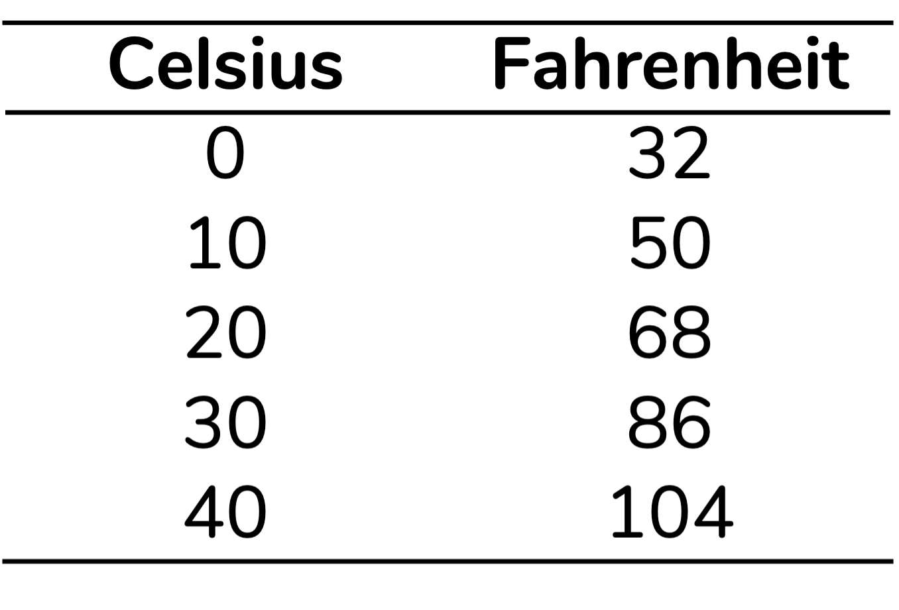

O coeficiente de variação não é adequado para algumas variáveis
Muiros autores dirão que o coeficiente de variação só pode ser calculado para variáveis de razão, que apresentam um zero absoluto (Abdi, 2010; Fávero; Belfiore, 2017; Santos; Dias, 2021). Ok, mas o que isso significa?
Podemos dividir as variáveis numéricas em variáveis de intervalo e variáveis de razão (Fávero; Belfiore, 2017). A diferença entre elas é que apenas as variáveis de razão apresentam um zero absoluto. Para isso fazer sentido, vamos pensar em temperaturas. Se aferimos uma temperatura em graus Celsius (°C), o zero (0°C) não indica ausência de temperatura. A escolha do zero é arbitrária. Por isso, a temperatura em Celsius está em uma escala intervalar. O mesmo vale para a temperatura em Fahrenheit (°F): há um zero arbitrário, que não indica ausência de temperatura. Portanto, Fahrenheit também é uma escala intervalar. Por outro lado, a temperatura em Kelvin (K) apresenta um zero absoluto: 0K corresponde a ausência de temperatura. Logo, a temperatura em Kelvin está em uma escala de razão.
A forma como interpretamos dados em escalas intervalares e de razão também é ligeiramente diferente. Se estamos trabalhando com uma escala de razão, como Kelvin, em que há um zero absoluto, podemos dizer que:
- A diferença de temperatura entre 10K e 20K é a mesma que entre 35K e 45K, por exemplo
- A temperatura 20K é o dobro da temperatura 10K
Se estamos falando de um dado medido em uma escala intervalar, a primeira frase se mantém, mas a segunda não. Por exemplo, para graus Celsius podemos dizer que:
- A diferença de temperatura entre 10°C e 20°C é a mesma que entre 35°C e 45°C
Mas, não podemos dizer que 20°C é o dobro da temperatura 10°C. Isso porque como não há um zero absoluto, não podemos dizer que um intervalo específico é multiplo de outro (Fávero; Belfiore, 2017).
Em geral, as análises e estatísticas descritivas que usamos para variáveis intervalares e de razão são as mesmas. Mas, o coeficiente de variação é uma exceção. Esse coeficiente deveria ser calculado apenas para dados em escala de razão.
Aqui preciso compartilhar que um exemplo que me fez enxergar o problema de usarmos dados intervalares para calcular o coeficiente de variação é o que consta na página sobre coefiente de variação da Wikipedia. Vou discutir uma versão simplificada aqui. Imagine que temos uma base de dados com cinco temperaturas em °C: 0, 10, 20, 30 e 40. Para representar essas mesmas temperaturas em Fahrenheit, devemos multiplicar cada valor em Celsius por 9/5 e então somar 32 ao resultado. Isso resulta nos valores representados na tabela abaixo:

Se os dados são exatamente os mesmos, apenas em escalas diferentes, esperaríamos um mesmo coeficiente de variação, certo? Mas… Isso não acontece:
Além disso, alguns autores dirão que o coeficiente de variação pode ser utilizado apenas quando todos os valores do conjunto são positivos (Abdi, 2010). Outros dirão que o coeficiente de variação pode ser calculado quando há valores negativos, mas apenas quando todos os valores do conjunto de dados são negativos (Santos; Dias, 2021). E, nesses casos, para calcular o coeficiente de variação devemos dividir o desvio-padrão pelo módulo – isso é, pelo valor absoluto – da média.
Mas, há aqui um consenso: não podemos usar o coeficiente de variação quando o conjunto de dados inclui valores positivos e negativos. Isso porque, nessas situações, o cálculo do coeficiente de variação resulta em uma valor que não segue interpretação que discutimos aqui.